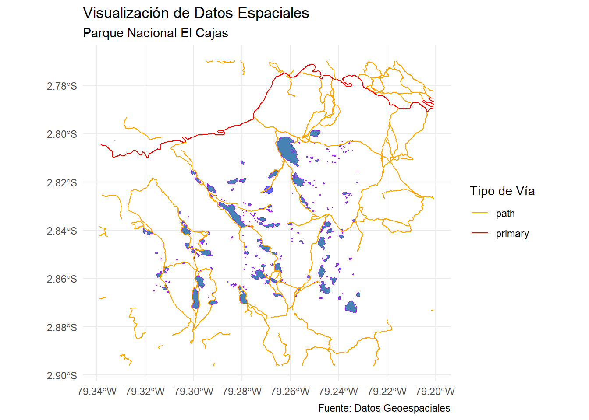
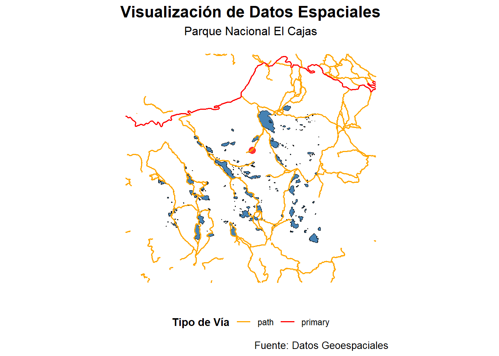

6.0.1 Guía de Estudiante: Visualización de Datos Espaciales con ggplot2 y sf
En la sección anterior, aprendimos cómo importar datos espaciales utilizando la librería sf en R. Sin embargo, solo tocamos superficialmente el uso de ggplot2 para la visualización de estos datos. ggplot2 es una librería poderosa en R que permite crear gráficos sofisticados y altamente personalizables basados en la gramática de los gráficos. Esta guía profundizará en las motivaciones, inspiraciones y elementos de ggplot2, culminando en una visualización profesional de datos espaciales utilizando la librería sf.
6.0.1.1 Motivaciones e Inspiraciones de ggplot2
ggplot2 fue creado por Hadley Wickham y se basa en “The Grammar of Graphics” de Leland Wilkinson. La idea central detrás de ggplot2 es que un gráfico se puede construir combinando diferentes capas de datos y transformaciones de datos, lo que permite una gran flexibilidad y control sobre la visualización final.
6.0.1.2 Elementos de ggplot2
ggplot2 se compone de varios elementos básicos que se pueden combinar para crear gráficos complejos. Estos son:
Datos (data): El conjunto de datos que se utilizará en el gráfico.
Estética (aes): Define el mapeo de variables a propiedades visuales, como ejes, colores y formas.
Geometrías (geom): Tipos de gráficos como puntos, líneas y barras.
Facetas (facet): Permite crear subgráficos basados en valores de una o más variables.
Estadísticas (stat): Transformaciones estadísticas de los datos que se pueden aplicar antes de graficar.
Coordenadas (coord): Sistemas de coordenadas para el gráfico, como cartesiano o polar.
Temas (theme): Controla la apariencia general del gráfico, como los tipos de letra y colores de fondo.
6.0.1.3 Crear un Gráfico Básico
Para comenzar, necesitamos cargar las librerías necesarias y los datos espaciales.
library(sf)
Linking to GEOS 3.11.2, GDAL 3.8.2, PROJ 9.3.1; sf_use_s2() is TRUE
── Conflicts ────────────────────────────────────────── tidyverse_conflicts() ──
✖ dplyr::filter() masks stats::filter()
✖ dplyr::lag() masks stats::lag()
ℹ Use the conflicted package (<http://conflicted.r-lib.org/>) to force all conflicts to become errors
Para hacer la visualización más atractiva y significativa, podemos agregar colores y personalizar otros aspectos del gráfico.
# Agregar colores y personalizaciónggplot() +geom_sf(data = poligonos, fill ="steelblue", color ="purple") +geom_sf(data = puntos, color ="blue", size =3, alpha =0.6) +geom_sf(data = lineas, aes(color = highway)) +scale_color_manual(values =c("orange", "red")) +coord_sf() +theme_minimal() +labs(title ="Visualización de Datos Espaciales",subtitle ="Parque Nacional El Cajas",caption ="Fuente: Datos Geoespaciales",color ="Tipo de Vía")
Warning in vp$just: encuentros parciales de 'just' to 'justification'

6.0.1.6 Explicación Detallada de los Elementos Utilizados
Datos (data): Utilizamos los objetos poligonos, puntos y lineas que contienen nuestros datos espaciales.
Estética (aes): En el caso de las líneas, usamos aes(color = highway) para mapear la variable highway a los colores.
Geometría (geom_sf): Usamos geom_sf() para graficar los datos espaciales. fill y color en los polígonos, color y size en los puntos, y color en las líneas.
Coordenadas (coord_sf): Usamos coord_sf() para establecer un sistema de coordenadas espaciales.
Tema (theme_minimal): Aplicamos un tema minimalista para una apariencia limpia.
Etiquetas (labs): Añadimos títulos, subtítulos y leyendas para proporcionar contexto y mejorar la legibilidad del gráfico.
6.0.1.7 Visualización Profesional
Para lograr una visualización profesional, es importante prestar atención a los detalles y personalizar el gráfico para que sea informativo y estéticamente agradable.
# Visualización profesionalggplot() +geom_sf(data = poligonos, fill ="steelblue", color ="black", lwd =0.2) +geom_sf(data = puntos, color ="red", size =3, alpha =0.8) +geom_sf(data = lineas, aes(color = highway), lwd =0.6) +scale_color_manual(values =c("orange", "red")) +coord_sf() +theme_minimal() +theme(plot.title =element_text(hjust =0.5, size =16, face ="bold"),plot.subtitle =element_text(hjust =0.5, size =12),plot.caption =element_text(size =10),legend.position ="bottom",legend.title =element_text(face ="bold"),axis.title =element_blank(),axis.text =element_blank(),axis.ticks =element_blank(),panel.grid =element_blank() ) +labs(title ="Visualización de Datos Espaciales",subtitle ="Parque Nacional El Cajas",caption ="Fuente: Datos Geoespaciales",color ="Tipo de Vía" )
Warning in vp$just: encuentros parciales de 'just' to 'justification'

Como puedes ver en esta función, se emplean múltiples elementos de ggplot2 para crear un gráfico profesional. La personalización del tema y la adición de etiquetas detalladas ayudan a que el gráfico sea más informativo y estéticamente agradable.
6.0.1.8 Conclusión
En esta guía, hemos explorado en detalle cómo importar y visualizar datos espaciales utilizando ggplot2 y sf en R. Desde la lectura de shapefiles hasta la creación de visualizaciones profesionales, hemos cubierto los elementos clave de ggplot2 que te permitirán crear gráficos sofisticados y efectivos para tus análisis en estadística y econometría espacial.